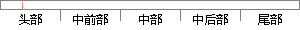

在游客端有景点介绍、游客论坛、旅途消费、投诉通道等功能。
片段位置图

相似结果|
相似片段 1：、特色旅游项目以及风光图片。信息服务：旅游常识、消费指南、气象信息、交通信息、景点客流信息。商家广告：宾馆简介、导游推介，商家广告、土特农产品广告，邻近旅游资源广告。网上投诉：开辟游客投诉通道，保障游客
|
※ 片段修改建议 ※
近似词参考：- 游客：旅客
- 介绍：先容
- 游客：旅客
- 消费：消耗
系统自动生成语句：在旅客端有景点先容、旅客论坛、旅途消耗、投诉通道等功能。
注：本片段修改建议为系统自动生成，仅供参考。